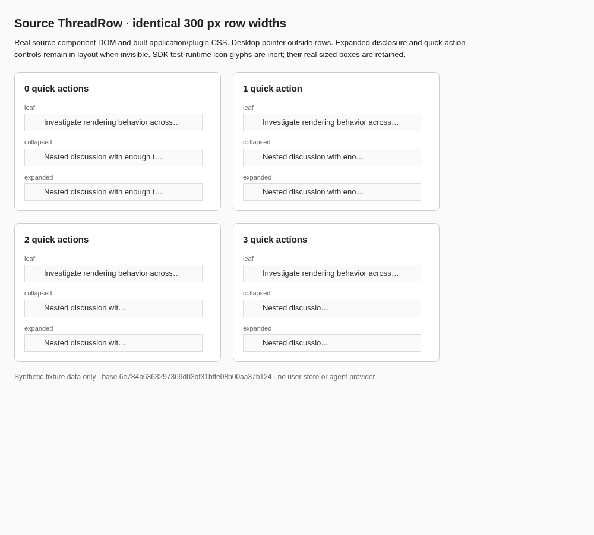

#8053 · Parent disclosure retains invisible action width
Verdict: REPRODUCED · Root-cause confidence: high. Reproduction label: confirmed-repro.
Trusted base: 6e784b6363297369d03bf31bffe08b00aa37b124. Two separate clean source checkouts; the same investigator performed both runs. This is a source-component browser reproduction, not a live-user-store or full-application test.
1. TL;DR
A row with children gives up title width for quick actions even while those controls are invisible. At one, two, and three configured actions, the parent loses 56, 86, and 116 pixels versus an equally indented leaf. Of that loss, 30 pixels per action come from unconditional desktop padding; the remaining 26 pixels are a 20-pixel disclosure and its 6-pixel gap. Expanding the parent hides the disclosure by opacity but does not reclaim either space. The source component and production CSS reproduce the measurements in two clean checkouts.
2. Claims vs findings
| Reported behavior | Finding | Evidence |
|---|---|---|
| Only parent rows reserve invisible action width at rest. | Verified | All leaf controls have opacity 0 and content padding 0; six parent cases with 1–3 actions retain 30/60/90 px padding. |
| Expanded parents retain a hidden disclosure slot. | Verified | Disclosure opacity 0, width 20 px, unchanged parent title width; flex gap adds 6 px. |
| Parent-vs-leaf losses are 56–116 px. | Verified | Measured 230 px leaf titles against 174/144/114 px parent titles. Both collapsed and expanded states match. |
| Removing actions reduces the extra reservation without fully equalizing parent/leaf width. | Verified | Zero actions remove the padding, but parent titles still lose 26 px for disclosure and gap. |
| The reported older installed release and exact reporter title truncation. | Not re-run | No installed application, reporter runtime, private data, or account was used. The source layout, not a provider-specific symptom, is reproduced. |
| A current source change already resolves this. | No relevant change found | A final fetch after reproduction found no changes to the implicated row, shared hover constants, or theme since the tested base. |
3. Environment
- Public repository
get-bb/bb; trustedorigin/mainbase above; Node v22.19.0, pnpm 9.15.0, Linux x86_64, Debian 12; source package bb-app 0.50.1. - Chrome for Testing 158.0.8127.36, local headless Browser Automation plugin. The browser was provisioned as test tooling; no project dependency or lockfile changed.
- Two new temporary source checkouts, each with its own generated synthetic fixture directory and its own HTTP port (48253 and 48254). No BB database, daemon, provider session, or production service was started.
- 300 px bordered fixture container, 298 px internal row, depth 1 for all rows, metadata disabled, zero through three actions, collapsed/expanded parents plus leaf controls. The provider list is empty, equally for all rows.
- Production app and thread-list CSS; real
ThreadRowmarkup from its existing SDK test harness. SDK test-runtime icons/status are inert. The title stub receivestruncate whitespace-pre, the plain-title classes actually used by ThreadTitleMentionsContent. No row layout rule or measured width is synthesized.
4. Minimal reproduction
Save the three inline files below as export-fixtures.patch, prepare-browser.mjs, and measure-browser.js beside a new source checkout. The patch only instruments an existing test; it does not change production code.
git clone https://github.com/get-bb/bb.git source cd source git checkout 6e784b6363297369d03bf31bffe08b00aa37b124 pnpm install --frozen-lockfile --prefer-offline pnpm exec turbo run build git apply ../export-fixtures.patch pnpm exec turbo run test --force --filter=bb-plugin-thread-list -- --run app/rows/ThreadRow.test.tsx -t 'reserves quick-action space after parent disclosure' node ../prepare-browser.mjs "$PWD" ../layout python3 -m http.server 48253 --bind 127.0.0.1 --directory ../layout
The first clean install/build initially hit the existing parallel SDK/plugin build-order error; repeating the unchanged build succeeded: 74 successful, 74 total. The unmodified existing row suite passed 96 tests. Fixture instrumentation passed 8 cases; it verifies current behavior, whereas the browser invariant below is the deliberately failing bug regression.
Use a desktop-hover Chrome instance. In headless Chrome without an input device, the default can be (hover:none), which intentionally bypasses the faulty padding. The regression refuses to run in that mode. This run supplied the following browser launch option (not application CSS):
--blink-settings=primaryPointerType=4,availablePointerTypes=4,primaryHoverType=2,availableHoverTypes=2
The Browser Automation plugin searches for Chrome on PATH. A temporary test launcher forwarded that option to the downloaded test browser. Reloading after viewport setup reapplies its desktop media state.
bb browser-automation open --backend local --headless --machine <your-test-host-id> --json
bb browser-automation run <session-id> --script 'const page=await browser.getPage("main"); await page.goto("http://127.0.0.1:48253"); console.log("Fixture loaded");' --json
bb browser-automation run <session-id> --script-file <absolute-path-to-measure-browser.js> --script-host <your-test-host-id> --json
Expected: parent content padding is 0 while row actions have opacity 0. Actual: the regression exits 1 with:
Error: Expected zero rest-state action padding; observed 6 padded parent cases
| Action count | Leaf title | Parent title, either state | Parent right padding | Title loss |
|---|---|---|---|---|
| 0 | 230 px | 204 px | 0 px | 26 px |
| 1 | 230 px | 174 px | 30 px | 56 px |
| 2 | 230 px | 144 px | 60 px | 86 px |
| 3 | 230 px | 114 px | 90 px | 116 px |

export-fixtures.patch — exact instrumentation
diff --git a/plugins/thread-list/app/rows/ThreadRow.test.tsx b/plugins/thread-list/app/rows/ThreadRow.test.tsx
index 20fc98d3ee..59f3dec26a 100644
--- a/plugins/thread-list/app/rows/ThreadRow.test.tsx
+++ b/plugins/thread-list/app/rows/ThreadRow.test.tsx
@@ -8,6 +8,8 @@ import {
waitFor,
} from "@testing-library/react";
import { afterEach, describe, expect, it, vi } from "vitest";
+import { mkdirSync, writeFileSync } from "node:fs";
+import { resolve } from "node:path";
import { getDefaultStore } from "jotai";
import { DndContext, useDraggable } from "@dnd-kit/core";
import { CompactViewportOverrideProvider } from "@/components/ui/hooks/use-compact-viewport";
@@ -1247,15 +1249,37 @@ describe("ThreadRow", () => {
expect(renderedIndicators()).toEqual(["unread-error"]);
});
- it.each([true, false])(
- "reserves quick-action space after parent disclosure (collapsed: %s)",
- (isCollapsed) => {
+ it.each([0, 1, 2, 3].flatMap((actionCount) =>
+ [true, false].map((isCollapsed) => ({ actionCount, isCollapsed })),
+ ))(
+ "reserves quick-action space after parent disclosure ($actionCount actions, collapsed: $isCollapsed)",
+ ({ actionCount, isCollapsed }) => {
+ const fixtureDirectory = resolve("../../.slopcop-8053-fixtures");
+ mkdirSync(fixtureDirectory, { recursive: true });
+ getDefaultStore().set(preferenceValueAtom("rowActions"), [
+ "bb--core/archive",
+ "bb--core/pin",
+ "bb--core/copyLink",
+ ].slice(0, actionCount));
+ const leaf = renderThreadRow({
+ thread: createThread({
+ title: "Investigate rendering behavior across sidebar layouts",
+ displayTitle: "Investigate rendering behavior across sidebar layouts",
+ status: "running",
+ runtimeStatus: "running",
+ }),
+ options: { kind: "default", depth: 1, isCompact: false },
+ });
+ writeFileSync(resolve(fixtureDirectory, `${actionCount}-leaf.html`), leaf.container.innerHTML);
+ cleanup();
const onToggleCollapsed = vi.fn();
- renderThreadRow({
+ const parent = renderThreadRow({
thread: createThread({
title: "Nested discussion with enough text to fill the sidebar width",
displayTitle:
"Nested discussion with enough text to fill the sidebar width",
+ status: "running",
+ runtimeStatus: "running",
}),
options: {
kind: "parent",
@@ -1278,6 +1302,7 @@ describe("ThreadRow", () => {
"pr-(--bb-sidebar-hover-actions-inset)",
),
).toBe(true);
+ writeFileSync(resolve(fixtureDirectory, `${actionCount}-${isCollapsed ? "collapsed" : "expanded"}.html`), parent.container.innerHTML);
const row = link.closest("[data-sidebar-rename-row]");
expect(
Array.from(row?.querySelectorAll("button") ?? [], (button) =>
@@ -1285,7 +1310,7 @@ describe("ThreadRow", () => {
),
).toEqual([
toggle.getAttribute("aria-label"),
- "Archive",
+ ...["Archive", "Pin", "Copy link"].slice(0, actionCount),
"Thread actions",
]);
fireEvent.click(toggle);
prepare-browser.mjs — source markup and production CSS fixture
import { copyFileSync, mkdirSync, readFileSync, readdirSync, writeFileSync } from "node:fs";
import { resolve } from "node:path";
const [checkout, destination] = process.argv.slice(2);
if (!checkout || !destination) throw new Error("Expected checkout and output directory");
mkdirSync(destination, { recursive: true });
const assets = resolve(checkout, "apps/app/dist/assets");
const appCss = readdirSync(assets).find((name) => /^index-.*\.css$/.test(name));
if (!appCss) throw new Error("Build the source app first");
copyFileSync(resolve(assets, appCss), resolve(destination, "app.css"));
for (const name of readdirSync(assets).filter((name) => /\.(woff2?|ttf)$/.test(name))) {
copyFileSync(resolve(assets, name), resolve(destination, name));
}
copyFileSync(resolve(checkout, "packages/bundled-plugins/dist/thread-list/dist/app.css"), resolve(destination, "thread-list.css"));
const fixtureDirectory = resolve(checkout, ".slopcop-8053-fixtures");
const cards = [0, 1, 2, 3].map((actionCount) => {
const rows = ["leaf", "collapsed", "expanded"].map((state) => {
const markup = readFileSync(resolve(fixtureDirectory, `${actionCount}-${state}.html`), "utf8")
.replaceAll('<span data-thread-title=', '<span class="truncate whitespace-pre" data-thread-title=');
return `<section data-case="${actionCount}-${state}"><p class="case-label">${state}</p><div data-sidebar="sidebar" data-bb-plugin="thread-list" class="fixture-row">${markup}</div></section>`;
}).join("");
return `<article><h2>${actionCount} quick action${actionCount === 1 ? "" : "s"}</h2>${rows}</article>`;
}).join("");
writeFileSync(resolve(destination, "index.html"), `<!doctype html><html lang="en"><head><meta charset="utf-8"><title>Issue 8053 · source component layout reproduction</title><link rel="stylesheet" href="app.css"><link rel="stylesheet" href="thread-list.css"><style>body{margin:0;padding:24px;font-family:Arial,sans-serif;background:#fafafa;color:#202020}h1{font-size:20px;font-weight:600;margin-bottom:8px}.description{font-size:13px;margin-bottom:20px;max-width:780px}.cards{display:grid;grid-template-columns:repeat(2,348px);gap:20px}article{border:1px solid #ccc;border-radius:8px;padding:16px;background:#fff}article h2{font-size:15px;font-weight:600;margin-bottom:12px}.case-label{font-size:11px;color:#666;margin:10px 0 2px}.fixture-row{width:300px;background:var(--sidebar);border:1px solid #ddd}.footer{margin-top:16px;font-size:12px;color:#666}</style></head><body><h1>Source ThreadRow · identical 300 px row widths</h1><p class="description">Real source component DOM and built application/plugin CSS. Desktop pointer outside rows. Expanded disclosure and quick-action controls remain in layout when invisible. SDK test-runtime icon glyphs are inert; their real sized boxes are retained.</p><main class="cards">${cards}</main><p class="footer">Synthetic fixture data only · base 6e784b6363297369d03bf31bffe08b00aa37b124 · no user store or agent provider</p></body></html>`);
console.log("Prepared source component layout fixture");
measure-browser.js — failing browser regression
const page = await browser.getPage("main");
await page.setViewport({ width: 1000, height: 900 });
await page.reload();
await page.mouse.move(950, 850);
const result = await page.evaluate(() => {
if (!matchMedia("(hover: hover)").matches) {
throw new Error("Use a desktop-hover browser for this reproduction");
}
return Array.from(document.querySelectorAll("[data-case]"), (section) => {
const title = section.querySelector(".bb-thread-title");
const content = section.querySelector("a").parentElement;
const chevron = section.querySelector("button[aria-label^=Expand],button[aria-label^=Collapse]");
const controls = section.querySelector("[data-sidebar-row-controls]");
return {
case: section.dataset.case,
rowWidth: section.querySelector("[data-sidebar-rename-row]").getBoundingClientRect().width,
titleWidth: title.getBoundingClientRect().width,
paddingRight: Number.parseFloat(getComputedStyle(content).paddingRight),
chevronWidth: chevron ? chevron.getBoundingClientRect().width : 0,
chevronOpacity: chevron ? Number(getComputedStyle(chevron).opacity) : null,
controlsOpacity: Number(getComputedStyle(controls.closest(".bb-sidebar-hover-actions")).opacity),
};
});
});
console.log(JSON.stringify(result));
const failures = result.filter((row) => !row.case.endsWith("leaf") && row.paddingRight !== 0);
if (failures.length > 0) {
throw new Error(`Expected zero rest-state action padding; observed ${failures.length} padded parent cases`);
}
5. Root cause
ThreadRow parent detection assigns reserveActionSpace = isParentRow && hasChildren. The content class selection uses unconditional pr-(--bb-sidebar-hover-actions-inset) for that case, instead of the leaf's hover-only helper. The inset calculation multiplies the action count by 7.5 spacing units: at 4 px, that is 30 px per action.
The shared theme rules hide controls with opacity rather than removing them from layout; the hover-only inset applies padding only when actions become available. Parent rows bypass that rest-state behavior. The disclosure remains inline and its size-5 class keep the 20 px button in flex flow even when hidden. The surrounding 6 px gap completes the fixed 26 px loss.
This is not caused by indentation or cross-project decoration: every fixture uses the same depth and no cross-project label. It is not caused by a running provider; no provider was invoked.
6. Proposed fix and simple-fix safety check
Choose a disclosure placement/hover policy before changing the reservation. A leading disclosure or separate stable disclosure region could reclaim hidden action space without moving the disclosure hit target. Reusing the existing hover-only inset is a smaller alternative, but it moves the disclosure when the row becomes hovered. Preserve action ordering, archive/menu alignment, keyboard focus, rename, compact/touch behavior, and expanded/collapsed state.
A controlled, unsaved DOM experiment replaced only the permanent-padding class with the existing hover-only helper. It reclaimed 30/60/90 px at rest but moved the disclosure left by exactly 30/60/90 px on hover. The Archive position stayed fixed in this experiment; this does not establish an Archive regression. The original source kept both positions stable. No production source was patched.
| Actions | Reclaimed rest width | Disclosure hover movement | Archive movement |
|---|---|---|---|
| 1 | 30 px | 30 px left | 0 px |
| 2 | 60 px | 60 px left | 0 px |
| 3 | 90 px | 90 px left | 0 px |
No pull request opened: a safe layout repair requires deciding whether disclosure movement is acceptable or changing its placement. That fails this automation's “no product decision” simple-fix gate. Existing source history deliberately restored permanent reservation for hover ordering/alignment, and the current row test explicitly enforces it. No dependency, public contract, stored data, branch, commit, or push was changed in the product repository. No open linked PR was found by issue cross-reference metadata or repository PR search.
Controlled hover-only class experiment
const page = await browser.getPage("main");
await page.reload();
const results = [];
for (const actionCount of [1, 2, 3]) {
const selector = `[data-case="${actionCount}-collapsed"]`;
const read = () => page.evaluate((selector) => {
const section = document.querySelector(selector);
const chevron = section.querySelector("button[aria-label^=Expand]");
const archive = section.querySelector("button[aria-label=Archive]");
const title = section.querySelector(".bb-thread-title");
return {
titleWidth: title.getBoundingClientRect().width,
chevronLeft: chevron.getBoundingClientRect().left,
archiveLeft: archive.getBoundingClientRect().left,
};
}, selector);
await page.mouse.move(950, 850);
const originalRest = await read();
const position = await page.evaluate((selector) => {
const rect = document.querySelector(selector).querySelector("[data-sidebar-rename-row]").getBoundingClientRect();
return { x: rect.left + 5, y: rect.top + rect.height / 2 };
}, selector);
await page.mouse.move(position.x, position.y);
const originalHover = await read();
await page.mouse.move(950, 850);
await page.evaluate((selector) => {
const content = document.querySelector(selector).querySelector("a").parentElement;
content.classList.remove("pr-(--bb-sidebar-hover-actions-inset)");
content.classList.add("bb-sidebar-hover-actions-inset");
}, selector);
const changedRest = await read();
await page.mouse.move(position.x, position.y);
const changedHover = await read();
results.push({actionCount, originalRest, originalHover, changedRest, changedHover});
}
console.log(JSON.stringify(results));
await page.reload();
7. Verification
A second clean temporary checkout was created at the exact trusted base, with a new fixture directory and port 48254. It installed dependencies with the frozen lockfile and built the repository (74 successful, 74 total, build artifacts cached). The same investigator applied only the above instrumentation, then forced test execution with pnpm exec turbo run test --force --filter=bb-plugin-thread-list -- --run app/rows/ThreadRow.test.tsx -t 'reserves quick-action space after parent disclosure'; all eight fixture cases executed and passed, with zero cached test tasks. The same browser regression then failed for the intended six padded parent cases. Its complete measurement output matched the first run byte for byte.
Corrections during investigation: the initial headless run used hover-none media and therefore correctly showed zero permanent padding; desktop-hover emulation was required. The SDK plain-title stub initially lacked production truncation classes; the fixture adapter restores those source-defined classes. An initial second-checkout test invocation returned a cached result without regenerating fixture files; that result was discarded and the test was rerun with --force. Only the corrected, uncached reproduction supports this verdict.

8. Related history
- Trusted main history: 115974a349 previously reclaimed rest width with a different parent hover arrangement.
- Trusted main history: 831f7432ca deliberately restored reserved parent width to keep disclosure/action ordering and aligned action columns.
- Trusted main history: 9e77a74a8d removes a separate cross-project leaf reservation but leaves the parent condition intact.
9. Appendix and limits
Verbatim browser regression measurements from the second run:
[{"case":"0-leaf","rowWidth":298,"titleWidth":230,"paddingRight":0,"chevronWidth":0,"chevronOpacity":null,"controlsOpacity":0},{"case":"0-collapsed","rowWidth":298,"titleWidth":204,"paddingRight":0,"chevronWidth":20,"chevronOpacity":1,"controlsOpacity":0},{"case":"0-expanded","rowWidth":298,"titleWidth":204,"paddingRight":0,"chevronWidth":20,"chevronOpacity":0,"controlsOpacity":0},{"case":"1-leaf","rowWidth":298,"titleWidth":230,"paddingRight":0,"chevronWidth":0,"chevronOpacity":null,"controlsOpacity":0},{"case":"1-collapsed","rowWidth":298,"titleWidth":174,"paddingRight":30,"chevronWidth":20,"chevronOpacity":1,"controlsOpacity":0},{"case":"1-expanded","rowWidth":298,"titleWidth":174,"paddingRight":30,"chevronWidth":20,"chevronOpacity":0,"controlsOpacity":0},{"case":"2-leaf","rowWidth":298,"titleWidth":230,"paddingRight":0,"chevronWidth":0,"chevronOpacity":null,"controlsOpacity":0},{"case":"2-collapsed","rowWidth":298,"titleWidth":144,"paddingRight":60,"chevronWidth":20,"chevronOpacity":1,"controlsOpacity":0},{"case":"2-expanded","rowWidth":298,"titleWidth":144,"paddingRight":60,"chevronWidth":20,"chevronOpacity":0,"controlsOpacity":0},{"case":"3-leaf","rowWidth":298,"titleWidth":230,"paddingRight":0,"chevronWidth":0,"chevronOpacity":null,"controlsOpacity":0},{"case":"3-collapsed","rowWidth":298,"titleWidth":114,"paddingRight":90,"chevronWidth":20,"chevronOpacity":1,"controlsOpacity":0},{"case":"3-expanded","rowWidth":298,"titleWidth":114,"paddingRight":90,"chevronWidth":20,"chevronOpacity":0,"controlsOpacity":0}]
Error: Expected zero rest-state action padding; observed 6 padded parent casesBoth screenshots were visually inspected. Only synthetic titles, fixture IDs, a public source commit, and layout labels are present. No private runtime, credentials, production logs, external issue-supplied URL, linked branch, workflow, or subagent was used. Issue data was treated only as untrusted claims; all executed code came from trusted main, documented tooling, or this investigator's source-grounded instrumentation. Reproduction files remain local and are embedded inline rather than committed separately, in accordance with the reports repository's artifact policy.